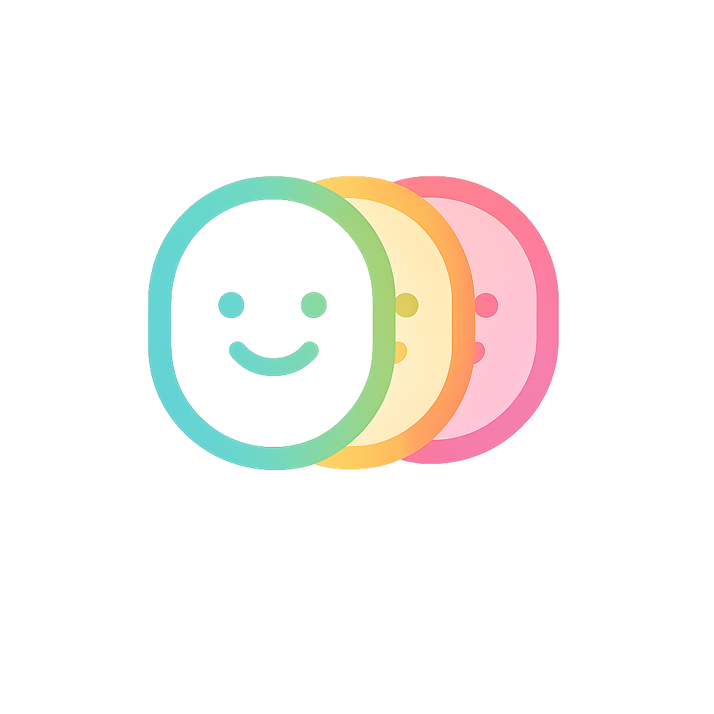

MoodFlowUnderstand the flow of your emotions
A gentle space to reflect, understand and grow.
1 Onboarding
MoodFlow mobile UI

MoodFlowA gentle space to reflect, understand and grow.
1 Onboarding
Take a deep breath and be with yourself.
You feel balanced and at ease.
Calm is not something you find. It is something you allow.
UnknownWorked on MoodFlow design
Evening walk after dinner
2 Home
Drag to explore
Creative · Energized · Optimistic
Release to select
3 Mood Logging
Choose all that apply
4 Mood Details
Worked on MoodFlow design
CreativeEvening walk after dinner
RestDeep work on product strategy
Productivity5 Journey
Here is what your flow is showing you.
You felt calmer this week.
Your happiest moments happened in the evening.
Stress levels decreased this month.
6 Insights